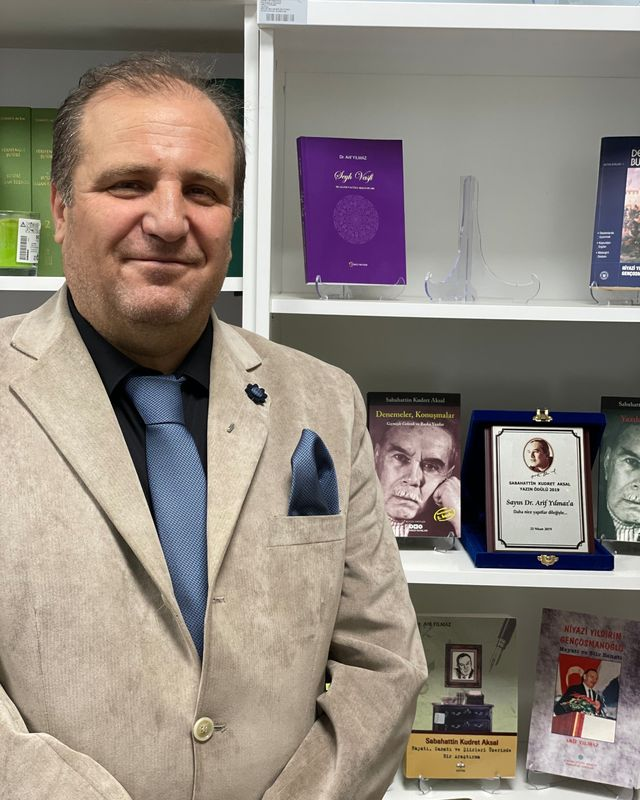
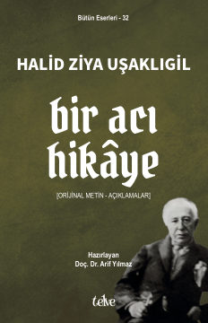
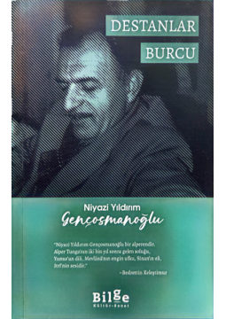
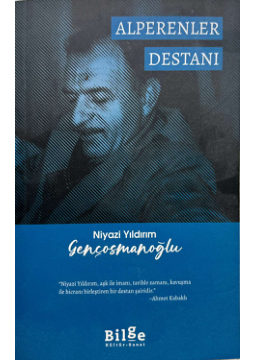
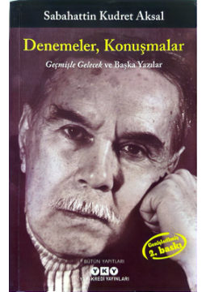

About
Arif Yılmaz is Associate Professor of Modern Turkish Literature in the Department of Turkish Language and Literature, Faculty of Humanities and Social Sciences, Uşak University, Türkiye. He completed his undergraduate studies at Yüzüncü Yıl University in 1992. He wrote his MA thesis on Niyazi Yıldırım Gençosmanoğlu at Gazi University under the supervision of Prof. Dr. Sadık Kemal Tural (1996) and his PhD dissertation on Sabahattin Kudret Aksal at Ankara University under the supervision of Prof. Dr. Ramazan Kaplan (2004).
He was a research assistant at Celâl Bayar University (1993–1999) and Ankara University (1999–2005); during these years he spent a period at the Middle East Studies Program of the University of Wisconsin–Madison (1996–1997). Seconded by the Turkish Ministry of National Education, he took part in founding the Department of Turkish Language and Literature at the Faculty of Arts, University of Aleppo (2005–2008). At Gaziantep University (2008–2012) he chaired the Department of Turkish Education and was the founding director of the university’s Turkish Language Teaching Application and Research Center.
He has been at Uşak University since 2012 and became associate professor in 2018. He has served as vice director of the Institute of Social Sciences, head of the Division of Modern Turkish Literature and head of the Department of Turkish Language and Literature. In the fall semester of 2024–2025 he taught as a visiting professor at Samarkand State Institute of Foreign Languages, Uzbekistan.
His research covers Turkish poetry, the novel, the short story and drama from the Tanzimat period to the present, together with textual scholarship. He has prepared critical editions of Sabahattin Kudret Aksal’s stories, poems and prose, of Niyazi Yıldırım Gençosmanoğlu’s collected poems and of Halid Ziya Uşaklıgil’s Bir Acı Hikâye. For his work on Aksal he received the Jury’s Special Award of the 2019 Sabahattin Kudret Aksal Literary Prize.


Research areas
- Poetry
- Tanzimat and Servet-i Fünun poetry, Mehmet Âkif Ersoy, Orhan Veli and the Garip movement, Sabahattin Kudret Aksal, Niyazi Yıldırım Gençosmanoğlu, Abdurrahim Karakoç, poetry in the digital age
- Novel
- Peyami Safa, Kemal Tahir, Dinçer Sümer, the fantastic and magical realism, the reader of novels
- Short story
- Orhan Kemal, Kemal Bilbaşar, Füruzan, Cemil Kavukçu and Turkish short fiction after 1980
- Drama
- Epic theatre, Recep Bilginer, Vasıf Öngören’s play Asiye Nasıl Kurtulur?
- Textual scholarship
- Critical editions, literary correspondence, the collected works of Aksal and Gençosmanoğlu
- Method
- Semiotics of values, theories of space, psychoanalytic and ecocritical reading
- Comparative
- Socialist realism in Turkish and Uzbek literatures
Publications
Publications are listed from the most recent; co-authors appear in the order of publication. Each entry gives the original Turkish citation followed by the English title. Titles without brackets are the English titles published with the work; titles in square brackets are translations. Preview pages of the books (cover, contents, introduction, conclusion and bibliography) and the full texts of several papers can be downloaded as PDF files.

2025Bir Acı Hikâye
2023Destanlar Burcu
2023Alperenler Destanı 2023Dede Korkut’tan Boğaç Han ve Salur Kazan
2023Dede Korkut’tan Boğaç Han ve Salur Kazan
2018Denemeler, Konuşmalar 2012Şeyh Vasfi ve Muallim Naci ile Mektupları
2012Şeyh Vasfi ve Muallim Naci ile Mektupları 2012Kemal Bilbaşar’ın Öykücülüğü
2012Kemal Bilbaşar’ın Öykücülüğü 2010Sabahattin Kudret Aksal: Hayatı, Sanatı ve Şiirleri
2010Sabahattin Kudret Aksal: Hayatı, Sanatı ve Şiirleri
Authored books 4
- 2012
Kemal Bilbaşar’ın Öykücülüğü. Uşak: Türkçe Mevsimi. Preview pages (PDF)[The Short Fiction of Kemal Bilbaşar]
- 2012
Şeyh Vasfi ve Muallim Naci ile Mektupları. Uşak: Türkçe Mevsimi (2nd printing 2013). Preview pages (PDF)[Şeyh Vasfi and His Correspondence with Muallim Naci]
- 2010
Sabahattin Kudret Aksal: Hayatı, Sanatı ve Şiirleri Üzerinde Bir Araştırma. Millî Eğitim Bakanlığı Yayınları. Preview pages (PDF)[Sabahattin Kudret Aksal: A Study of His Life, Art and Poetry]
- 2000
Niyazi Yıldırım Gençosmanoğlu: Hayatı ve Şiir Sanatı. Atatürk Kültür Merkezi Başkanlığı Yayınları. Preview pages (PDF)[Niyazi Yıldırım Gençosmanoğlu: His Life and Poetic Art]
Critical editions 12
- 2025
Halid Ziya Uşaklıgil, Bir Acı Hikâye. Critical edition. Telve. Preview pages (PDF)[A Bitter Story]
- 2023
Niyazi Yıldırım Gençosmanoğlu, Destanlar Burcu (expanded), Bozkurtların Destanı, Alperenler Destanı and Dede Korkut’tan Boğaç Han ve Salur Kazan Destanları. Revised critical edition in four volumes. Bilge Kültür Sanat. Preview pages (PDF): Destanlar Burcu, Bozkurtların Destanı, Alperenler Destanı, Dede Korkut’tan Boğaç Han ve Salur Kazan Destanları[The Bastion of Epics; The Epic of the Grey Wolves; The Epic of the Alperens; The Epics of Boğaç Han and Salur Kazan from Dede Korkut]
- 2018
Sabahattin Kudret Aksal, Denemeler, Konuşmalar. Expanded critical edition (2nd edition). Yapı Kredi Yayınları. Preview pages (PDF)[Essays, Talks]
- 2018
Sabahattin Kudret Aksal, Yazılar, Yanıtlar. Yapı Kredi Yayınları. Preview pages (PDF)[Writings, Replies]
- 2008
Sabahattin Kudret Aksal, Bütün Şiirleri (Şiirler 1938–1993). Critical edition. Yapı Kredi Yayınları. Preview pages (PDF)[Collected Poems (Poems 1938–1993)]
- 2005
Sabahattin Kudret Aksal, Gazoz Ağacı ve Diğer Öyküler. Critical edition. Yapı Kredi Yayınları. Preview pages (PDF)[The Soda Tree and Other Stories]
- 2002
Niyazi Yıldırım Gençosmanoğlu, Bütün Şiirleri 1–3: Destanlar Burcu, Bozkurtların Destanı, Alperenler Destanı. Critical edition. Türk Edebiyatı Vakfı Yayınları. Preview pages (PDF): Destanlar Burcu, Bozkurtların Destanı, Alperenler Destanı[Collected Poems 1–3: The Bastion of Epics; The Epic of the Grey Wolves; The Epic of the Alperens]
Book chapters and encyclopedia entries 6
- 2026
“Recep Bilginer’in Tiyatroları ve Tiyatro Anlayışı.” In Türk Tiyatrosu (Hece special issue 52), vol. 1, ed. Koray Üstün and Nurtaç Ergün Atbaşı, pp. 909–924. Hece.[Recep Bilginer’s Plays and His Conception of Theatre]
- 2025
Arif Yılmaz and Berkay Şen. “Henri Lefebvre’nin Mekânsal Üçlü Kuramı Bağlamında Asiye Nasıl Kurtulur? Oyunu.” In Prof. Dr. Abide Doğan Armağanı, pp. 479–496. Paradigma Akademi.[The Play Asiye Nasıl Kurtulur? in the Light of Henri Lefebvre’s Spatial Triad]
- 2023
“Kemal Bilbaşar’ın Öykülerinde Göç Olgusu.” In Türk Edebiyatında Ekonomik Kaynaklı Göç Konulu Eserler Üzerine İncelemeler, ed. Ayfer Yılmaz, pp. 243–261. Sonçağ.[Migration in Kemal Bilbaşar’s Short Stories]
- 2023
“Sabahattin Kudret Aksal (1920–1993).” Entry in Atatürk Ansiklopedisi. Atatürk Araştırma Merkezi.[Entry in the Atatürk Encyclopedia]
- 2023
“Sezai Karakoç’ta Metafizik Mizaç.” In Sezai Karakoç, ed. Fatma Atay. Diyanet İşleri Başkanlığı Yayınları.[The Metaphysical Temperament of Sezai Karakoç]
- 2020
“Sabahattin Kudret Aksal ve Şiirleri Üzerine.” In Sabahattin Kudret Aksal’a Armağan, ed. Adil İzci, pp. 76–89. Ve Yayınevi.[On Sabahattin Kudret Aksal and His Poetry]
Peer-reviewed journal articles 16
- 2026
Berkay Şen and Arif Yılmaz. “Philippe Hamon’un İdeolojik Çözümleme Modeli ve Esir Şehrin Mahpusu Romanında Normatif Değer Üretimi.” Edebî Eleştiri Dergisi 10 (2): 667–681. doi:10.31465/eeder.1938714Philippe Hamon’s Ideological Analysis Model and Normative Value Production in Esir Şehrin Mahpusu
- 2026
Arif Yılmaz and Berkay Şen. “Konforun Estetiği ve Mücadelenin Etiği: Esir Şehrin İnsanlarında İki Zıt Değer Dizgesi Olarak Nermin ve Nedime.” YAZIT Kültür Bilimleri Dergisi 6 (1): 170–191. doi:10.59902/yazit.1896108The Aesthetics of Comfort and the Ethics of Struggle: Nermin and Nedime as Two Contrasting Value Systems in Esir Şehrin İnsanları
- 2025
Arif Yılmaz and Büşra Ulusoy. “Fantastik ile Büyülü Gerçekçiliğin Sınırları Üzerine Kavramsal Bir İnceleme.” Uluslararası Dil, Edebiyat ve Kültür Araştırmaları Dergisi 8 (3): 1271–1285. doi:10.37999/udekad.1720020A Conceptual Inquiry into the Boundaries of the Fantastic and Magical Realism
- 2023
Arif Yılmaz and Fatih Bayram. “Dinçer Sümer’in Romanlarında Cinsel Kimlik İnşasındaki Sorunlar ve Çözüm Önerileri.” RumeliDE Dil ve Edebiyat Araştırmaları Dergisi 37: 378–392. doi:10.29000/rumelide.1405747The Issues of Sexual Identity Construction in Dinçer Sümer’s Novels and Proposed Solutions
- 2023
Bayram Bilir and Arif Yılmaz. “Özbek Edebiyatında Toplumcu Gerçekçilik.” Uluslararası Türk Lehçe Araştırmaları Dergisi (TÜRKLAD) 7 (2): 249–260. doi:10.30563/turklad.1365957Socialist Realism in Uzbek Literature
- 2023
Arif Yılmaz and Fatih Bayram. “Epik Tiyatroda Merak Duygusunun Kırılması.” RumeliDE Dil ve Edebiyat Araştırmaları Dergisi 35: 423–438. doi:10.29000/rumelide.1342128Breaking the Feeling of Suspense in Epic Theatre
- 2017
Arif Yılmaz and Burcu Uşaklı Sandal. “Füruzan’ın Öykülerinde Oidipal Kadın Kahramanlar ve Anne-Kız Çatışmaları.” Turkish Studies 12 (15): 667–686. doi:10.7827/TurkishStudies.11625Oedipal Woman Characters in Füruzan’s Stories and Mother-Daughter Conflicts
- 2015
Arif Yılmaz and Nergiz Gümüş Özdemir. “Hüseyin Sîret’in ‘Leyâl-i Girîzân’ Adlı Şiiri.” Uluslararası Sosyal ve Eğitim Bilimleri Dergisi 2 (4): 148–174. doi:10.20860/ijoses.51448Hüseyin Siret’s Poem: ‘Leyâl-i Girîzân’
- 2012
“İsmail Safa’nın Şiir Anlayışı ve Ilımlılar.” Gaziantep Üniversitesi Sosyal Bilimler Dergisi 11 (1): 137–158. Full text (DergiPark)Ismâil Safâ’s Concept of Poetry and Moderates
- 2012
“Mehmet Âkif Ersoy’un Şiirlerinde Halk Kültürü Ögeleri.” Mustafa Kemal Üniversitesi Sosyal Bilimler Enstitüsü Dergisi 9 (17): 163–194. Full text (DergiPark)Folk Culture Elements in the Poems of Mehmet Akif Ersoy
- 2011
“Orhan Veli’de Kaçış.” Gaziantep Üniversitesi Sosyal Bilimler Dergisi 10 (1): 257–279. Full text (DergiPark)Theme of Flight in Orhan Veli’s Poems
- 2010
“Sosyal ve Siyasî Değişmeler Açısından Peyami Safa’nın Mahşer Romanı.” Yeni Türk Edebiyatı Araştırmaları 3: 39–57. Full text (DergiPark)Analysis of Peyami Safa’s Novel Mahşer (Armageddon) from a Social and Political Change Perspective
- 2009
“Mehmet Âkif Ersoy’un Şiirlerinde Halk Dilinin Kullanımı.” Mustafa Kemal Üniversitesi Sosyal Bilimler Enstitüsü Dergisi 6 (11): 189–210. Full text (DergiPark)The Using of Public Speech in the Poems of Mehmet Akif Ersoy
- 2006
“Sabahattin Kudret Aksal’ın Şiirlerinde ‘Kaçış’ Teması.” Türk Dili 91 (653): 421–432.[The Theme of ‘Escape’ in Sabahattin Kudret Aksal’s Poetry]
- 2005
“Sabahattin Kudret Aksal’ın Hikâyeleri.” Türk Dili 90 (645): 254–263.[The Short Stories of Sabahattin Kudret Aksal]
- 2002
“Atsız’ın Niyazi Yıldırım Gençosmanoğlu’na Gönderdiği Mektuplar.” Türk Yurdu 22 (184): 44–49.[Atsız’s Letters to Niyazi Yıldırım Gençosmanoğlu]
Conference papers 12
- 2025
Arif Yılmaz and Aysel Akdağ Uygun. “Cemil Kavukçu’nun Öykülerinde Yalnızlık Tezahürleri: Ekoeleştirel Bir Okuma.” 13th International New York Academic Research Congress on Social, Humanities, Administrative and Educational Sciences, pp. 448–460. doi:10.30546/19023.978-9952-8573-9-9.2025.9012 Full text (PDF)Manifestations of Loneliness in Cemil Kavukçu’s Stories: An Ecocritical Reading
- 2025
Arif Yılmaz and Aysel Akdağ Uygun. “Cemil Kavukçu’nun Öykülerinde Tabiatın İyileştirici Gücü.” 7th International Black Sea Modern Scientific Research Congress, pp. 1–10.[The Healing Power of Nature in Cemil Kavukçu’s Stories]
- 2024
“Dijital Çağda Şiirin Metamorfozu: İbrahim Tenekeci’nin Instagram Paylaşımları Üzerine Bir İnceleme.” Globallashuv davrida filologiya fanlarini o‘qitishning dolzarb muammolari (Karshi, Uzbekistan), pp. 17–26.[The Metamorphosis of Poetry in the Digital Age: A Study of İbrahim Tenekeci’s Instagram Posts]
- 2024
“Yakın Dönem Türk Romanlarında Yabancılaşmanın Dili: Sembol.” The Development History and Modern Significance of Intercultural Dialogue (Samarkand), pp. 621–626.[The Language of Alienation in Recent Turkish Novels: The Symbol]
- 2024
Arif Yılmaz and Mustafa Çiçek. “Abdurrahim Karakoç’un Vur Emri Şiir Kitabında Yer Alan Halk Bilimi Öğeleri.” 12th International Başkent Congress on Social, Humanities, Administrative, and Educational Sciences, pp. 1086–1101. doi:10.5281/zenodo.11194274 Full text (PDF)Folklore Elements in Abdurrahim Karakoç’s Vur Emri Poetry Book
- 2023
Arif Yılmaz and Bayram Bilir. “Türk Edebiyatında Toplumcu Gerçekçi Romanların Ortaya Çıkışı.” Tilshunoslik va lingvodidaktikaning istiqbolli yo‘nalishlari (Samarkand), pp. 234–238.[The Emergence of the Socialist Realist Novel in Turkish Literature]
- 2023
Bayram Bilir and Arif Yılmaz. “İlköğretimde Toplumcu Gerçekçi Eserler Meselesi.” Global Issues of Primary Education Development: Problem, Research, pp. 290–292.[The Question of Socialist Realist Works in Primary Education]
- 2023
Bayram Bilir and Arif Yılmaz. “Toplumcu Gerçekçi Özbek Romanlarında Rüşvet Kronotopu.” Global and National Values Along Great Silk Road: Language, Education and Culture, pp. 100–102.[The Chronotope of Bribery in Uzbek Socialist Realist Novels]
- 2023
Arif Yılmaz and Mustafa Çiçek. “Abdurrahim Karakoç’un Şiirlerinde Halk Bilimi Öğeleri” (abstract). 8th International Congress on Humanities and Social Sciences in a Changing World, pp. 218–219.[Folklore Elements in Abdurrahim Karakoç’s Poetry]
- 2023
Arif Yılmaz and Fatih Bayram. “Epik Tiyatroda Kullanılan Tekniklerin İşlevselliği.” 5th International “Artemis” Congress on Humanities and Social Sciences, pp. 339–345. Full text (PDF)Functionality of Techniques Used in Epic Theatre
- 2023
Arif Yılmaz and Fatih Bayram. “Epik Tiyatroda Ara Oyun Kullanımı” (abstract). 5th International “Artemis” Congress on Humanities and Social Sciences, pp. 322–323.[The Use of the Interlude in Epic Theatre]
- 2016
Arif Yılmaz and Aykut Çelik. “Mizah Kavramı Çerçevesinde Yeni Garipçi Şiire Bir Bakış.” 1. Uluslararası Sosyal Bilimler Sempozyumu [1st International Symposium on Social Sciences], pp. 3075–3091.[A Look at Neo-Garip Poetry through the Concept of Humour]
Other writings 8
- 2026
“Romanı Okuyan, Romanda Kaybolan: Cemil Meriç’te Roman Okuru Üzerine.” Türk Dili 894: 40–47.[Reading the Novel, Lost in the Novel: On the Reader of Novels in Cemil Meriç]
- 2024
“Niyazi Yıldırım Gençosmanoğlu Üzerine Bir Söyleşi.” İmbik: Kültür, Sanat ve Edebiyat Dergisi 4 (25): 20–24.[An Interview on Niyazi Yıldırım Gençosmanoğlu]
- 2022
“Samiha Ayverdi’nin Hancı Adlı Eseri.” İLESAM İlim ve Edebiyat Dergisi 37: 5–12.[Samiha Ayverdi’s Hancı]
- 2021
“Niyazi Yıldırım Gençosmanoğlu’nun Şiir Kitaplarının Yeniden Yayımlanması Üzerine.” İLESAM İlim ve Edebiyat Dergisi 7 (32): 35–41.[On the Republication of Niyazi Yıldırım Gençosmanoğlu’s Books of Poetry]
- 2014
“Asrımızın Dede Korkut’u Niyazi Yıldırım Gençosmanoğlu.” Devlet 454: 86–94.[Niyazi Yıldırım Gençosmanoğlu, the Dede Korkut of Our Age]
- 2005
Book review: Sadık Tural, Edebiyat Bilimine Katkılar I. Türk Dili 90 (644): 181–186.[Contributions to Literary Studies I]
- 2004
“Toplumsal Gerçekçilik Bağlamında Orhan Kemal’in Hikâyeleri.” Hece Öykü 4: 86–91.[Orhan Kemal’s Short Stories in the Context of Social Realism]
- 2004
“Niyazi Yıldırım Gençosmanoğlu’nun Düz Yazıları.” Bizim Külliye 22: 45–51.[The Prose Writings of Niyazi Yıldırım Gençosmanoğlu]
Teaching
Undergraduate courses taught in the Department of Turkish Language and Literature, Uşak University:
- Tanzimat Literature (Poetry) Tanzimat Edebiyatı (Şiir)
- Servet-i Fünun Literature (Poetry) Servet-i Fünun Edebiyatı (Şiir)
- Turkish Short Fiction after 1980 1980 Sonrası Türk Hikâyesi
- Academic Turkish: Speaking and Listening (university-wide elective) Akademik Türkçe Konuşma ve Dinleme
Supervised theses
Theses completed under his supervision at the Institute of Graduate Studies, Uşak University.
- 2026
Büşra Ulusoy. Engin Geçtan’ın romanlarında büyülü gerçekçilik: Gerçekliğin sihirli kapıları. MA thesis.[Magical Realism in Engin Geçtan’s Novels: The Magic Doors of Reality]
- 2025
Mustafa Çiçek. 1980 sonrası Türk şiirinde İslami duyarlılık. PhD dissertation.[Islamic Sensibility in Turkish Poetry after 1980]
- 2025
Talip Karaoğlu. Türk romanında mültecilik ve mülteci (2000–2025). MA thesis.[Refuge and the Refugee in the Turkish Novel (2000–2025)]
- 2024
Bayram Bilir. Türk ve Özbek edebiyatlarında toplumcu gerçekçi romanların kronotopları. PhD dissertation.[Chronotopes of the Socialist Realist Novel in Turkish and Uzbek Literatures]
- 2024
Fatih Bayram. Epik tiyatronun Türk edebiyatına yansıması ve eserlerin incelenmesi. PhD dissertation.[Epic Theatre in Turkish Literature: Its Reception and an Analysis of the Plays]
- 2016
Burcu Uşaklı Sandal. Füruzan’ın öyküleri üzerine psikanalitik bir inceleme. MA thesis.[A Psychoanalytic Study of Füruzan’s Short Stories]
Links
- Google Scholar Publications and citations
- ORCID 0000-0002-2652-3649
- AVESİS (Uşak University) avesis.usak.edu.tr/arif.yilmaz
- DergiPark @ayilmaz_1038
- Web of Science ResearcherID ACV-6378-2022
- ResearchGate Arif-Yilmaz
Uşak University, Faculty of Humanities and Social Sciences, Department of Turkish Language and Literature, Uşak, Türkiye.